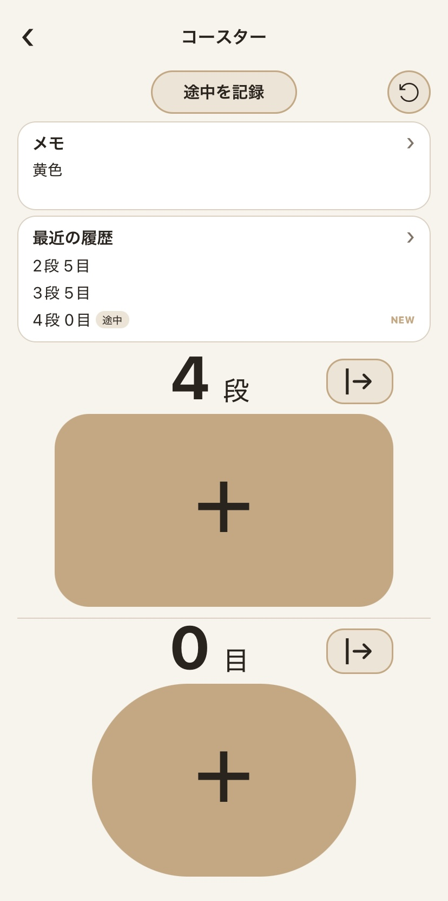
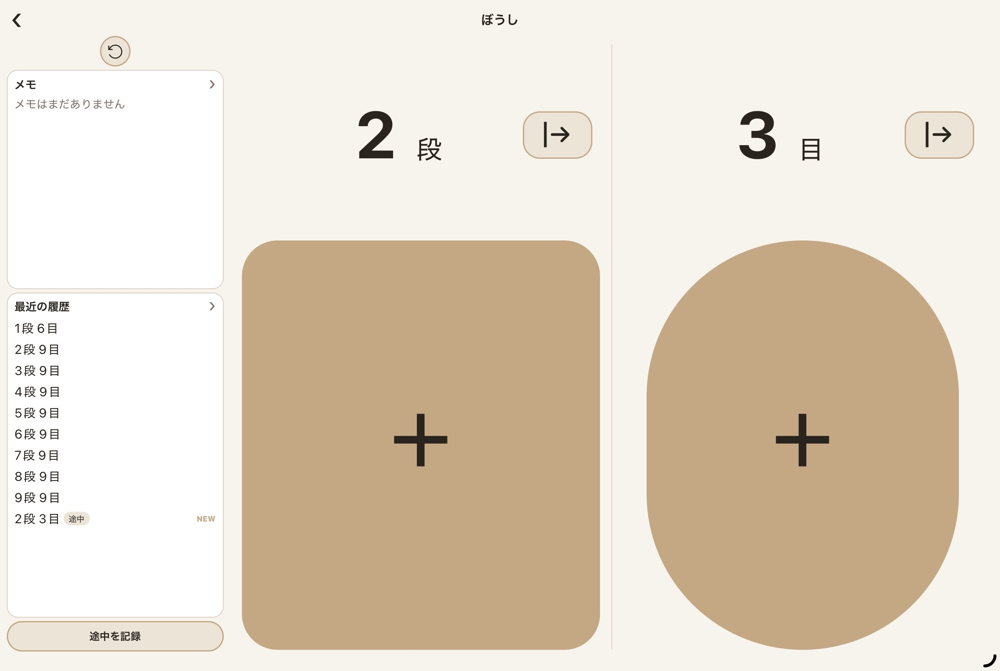

1
作品を作る
作品ごとにカウントを
保存できます。
HOW TO USE
作品ごとにカウントを
保存できます。

段と目を、大きな＋ボタンで
カウント。

アプリを閉じても自動保存。
履歴を見れば、どこまで編んだか
分かります。
FEATURES
段だけ、目だけ、両方。編み方に合わせて使えます。
押し間違えたカウントや履歴を、何度でも元に戻せます。
編みかけの位置を「途中」として履歴に残せます。
途中でアプリを閉じても、カウントや変更内容は自動で保存されます。
針の号数、糸の情報、次にすることなどを作品ごとに残せます。
テーマカラーを変更できます。操作音もON / OFFできます。
手が編み物でふさがっていても押しやすい、大きな＋ボタン。
iPHONE / iPAD
iPhone / iPadに対応。画面の向きに合わせて使えます。

